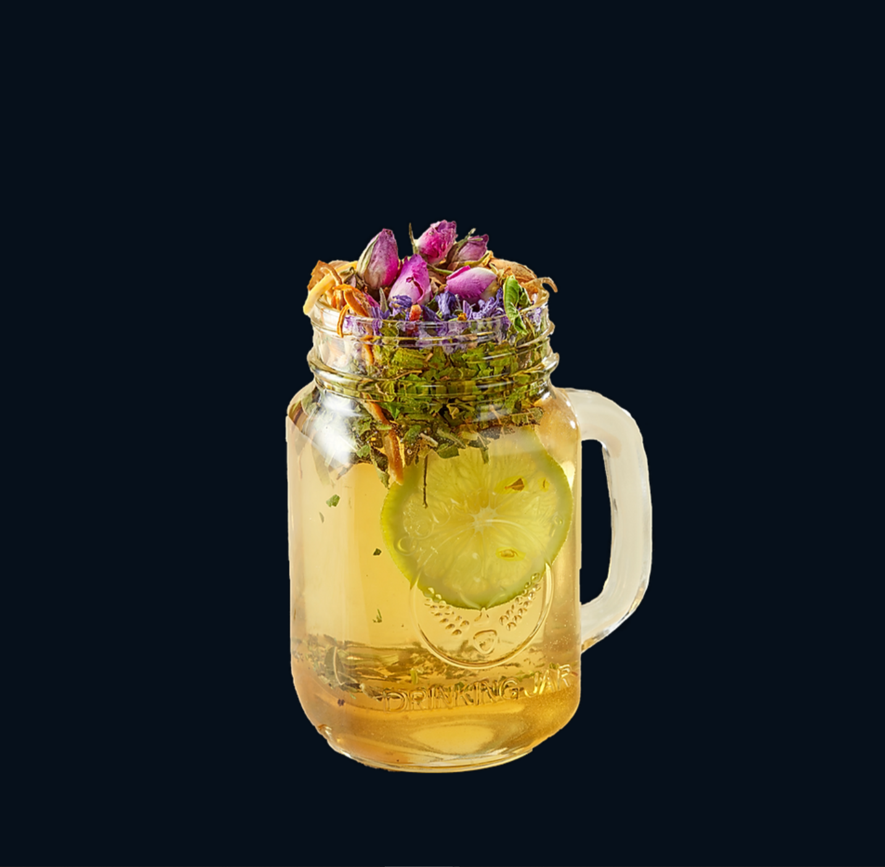
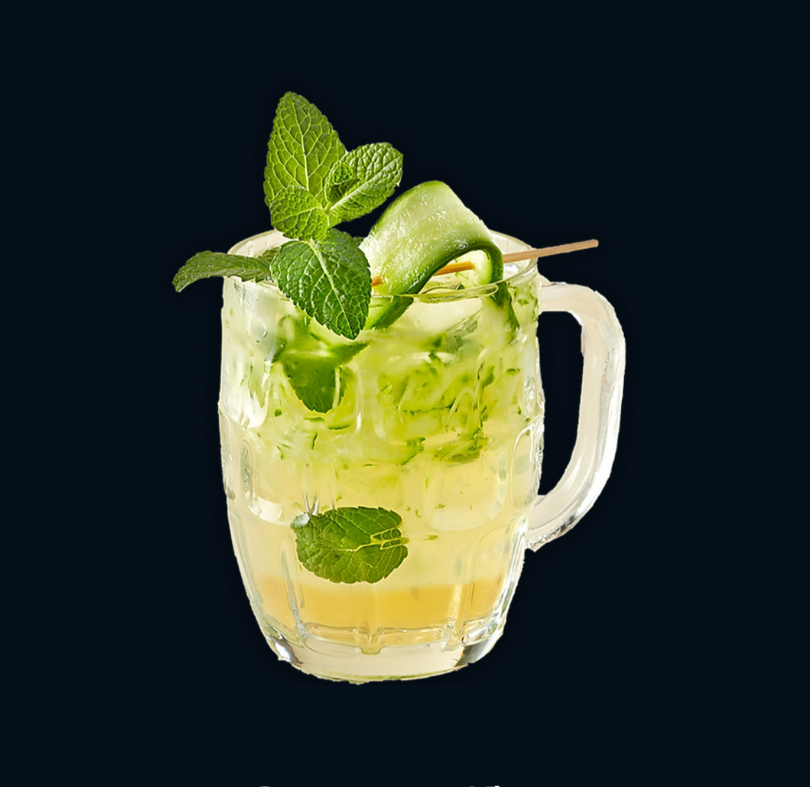

Drinks

Persian Fog
Aunja's special saffron syrup + Black Tea + Steamed Milk + Pistachio.

Persian Fragrance
Persian Rose + Orange Blossom + Orange Peel + Lemon Verbena + Honey

Showman Kiss
Sekanjebin (A Traditional Iranian Syrup) Prepared with Mint Served with Grated Cucumber